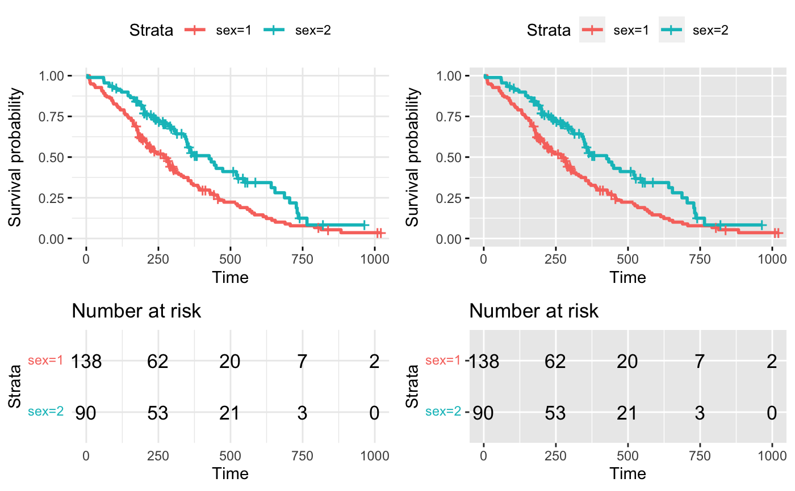

arrange_ggsurvplots.RdArranging multiple ggsurvplots on the same page.
arrange_ggsurvplots(x, print = TRUE, title = NA, ncol = 2, nrow = 1, surv.plot.height = NULL, risk.table.height = NULL, ncensor.plot.height = NULL, ...)
| x | a list of ggsurvplots. |
|---|---|
logical value. If TRUE, the arranged plots are displayed. |
|
| title | character vector specifying page title. Default is NA. |
| ncol, nrow | the number of columns and rows, respectively. |
| surv.plot.height | the height of the survival plot on the grid. Default
is 0.75. Ignored when risk.table = FALSE. |
| risk.table.height | the height of the risk table on the grid. Increase the value when you have many strata. Default is 0.25. Ignored when risk.table = FALSE. |
| ncensor.plot.height | The height of the censor plot. Used when
|
| ... | not used |
returns an invisible object of class arrangelist (see marrangeGrob), which can be saved into a pdf file using the function ggsave.
# Fit survival curves require("survival") fit<- survfit(Surv(time, status) ~ sex, data = lung) # List of ggsurvplots require("survminer") splots <- list() splots[[1]] <- ggsurvplot(fit, data = lung, risk.table = TRUE, ggtheme = theme_minimal()) splots[[2]] <- ggsurvplot(fit, data = lung, risk.table = TRUE, ggtheme = theme_grey()) # Arrange multiple ggsurvplots and print the output arrange_ggsurvplots(splots, print = TRUE, ncol = 2, nrow = 1, risk.table.height = 0.4)# NOT RUN { # Arrange and save into pdf file res <- arrange_ggsurvplots(splots, print = FALSE) ggsave("myfile.pdf", res) # }